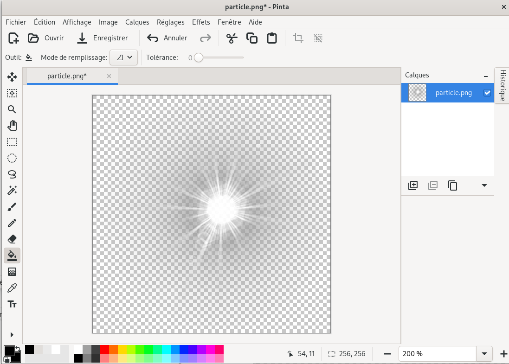
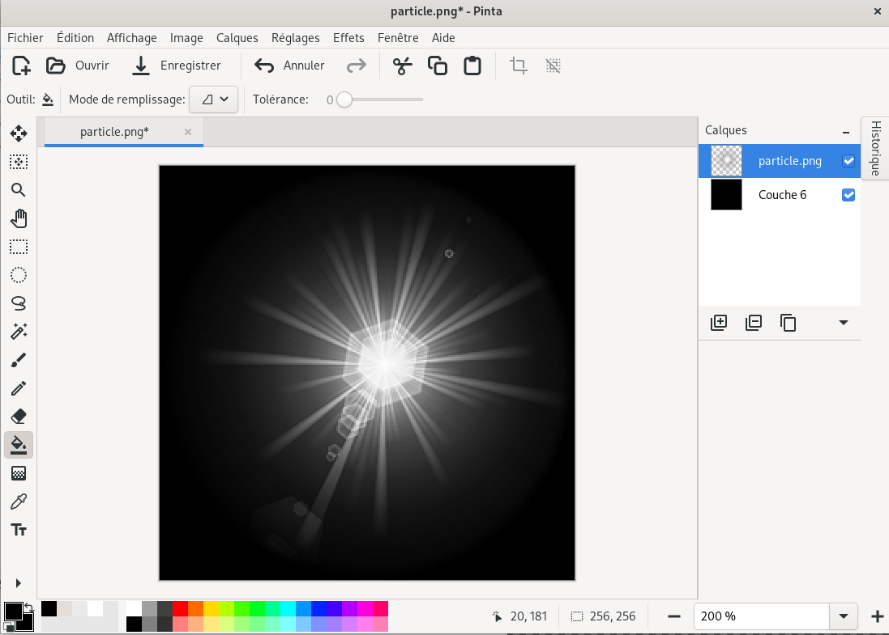

le but de cette page est d'expliquer l'importance du "premultiplied alpha" en WebGL.
on a un fichier au format PNG. il contient une image comportant des zones plus ou moins transparentes.
cliquez sur l'image pour la télécharger :
Nous allons d'abord observer cette image de diverses façons
Voici cette image chargée dans le logiciel Pinta
la zone façon petit carrelage représente la transparence
On ajoute un calque au dessous . On le rempli avec la couleur noire.
Plaçons cette image comme élément d'une balise <img> (avec un fond noir)
<img src="particle.png" style="background-color:black" >
voyons le code JavaScriopt, WebGL et GLSL
let images=[];
function loadImage(url) {
return new Promise((resolve, reject) => {
const img = new Image();
img.onload = () => resolve(img);
img.onerror = reject;
img.crossOrigin = 'anonymous';
img.src = url;
});
}
async function loadImages(imgs) {
images = await Promise.all(imgs.map(loadImage));
}
async function main() {
await loadImages([
'uneParticle.png'
]);
let vertex=`
attribute vec2 position;
void main() {
gl_Position = vec4(position,0, 1);
gl_PointSize = 256.0;
}
`;
let fragment=`
precision highp float;
uniform sampler2D particle;
void main() {
vec4 color= texture2D(particle, gl_PointCoord);
gl_FragColor=color;
}
`;
go1("glcanvas1",vertex,fragment);
fragment=`
precision highp float;
uniform sampler2D particle;
void main() {
vec4 color= texture2D(particle, gl_PointCoord);
color.rgb = vec3(color.r * color.a, color.g * color.a , color.b * color.a);
gl_FragColor=color;
}
`;
go1("glcanvas2",vertex,fragment);
}
main();
function go1(leCanvas,vertex,fragment) {
const canvas = document.getElementById(leCanvas);
canvas.width=256;
canvas.height=256;
const gl = canvas.getContext("webgl");
let program = gl.createProgram();
const vertexShader = gl.createShader(gl.VERTEX_SHADER);
const fragmentShader = gl.createShader(gl.FRAGMENT_SHADER);
gl.shaderSource(vertexShader, vertex);
gl.shaderSource(fragmentShader, fragment);
gl.compileShader(vertexShader);
gl.compileShader(fragmentShader);
gl.attachShader(program, vertexShader);
gl.attachShader(program, fragmentShader);
gl.linkProgram(program);
gl.useProgram(program);
let aPosition = gl.getAttribLocation(program,"position");
gl.enableVertexAttribArray(aPosition);
let particleLoc = gl.getUniformLocation(program,"particle");
let buffer= gl.createBuffer();
gl.bindBuffer(gl.ARRAY_BUFFER,buffer);
gl.bufferData(
gl.ARRAY_BUFFER,
new Float32Array(
[
-0.0, 0.0,
//+0.5, 0.0
]
),
gl.STATIC_DRAW
);
gl.vertexAttribPointer(aPosition,2,gl.FLOAT,false ,0,0);
let imageTexture = gl.createTexture();
let texUnitIndex= 3;
gl.activeTexture(gl.TEXTURE0 + texUnitIndex);
const bindPoint = gl.TEXTURE_2D;
gl.bindTexture(bindPoint, imageTexture);
gl.uniform1i(particleLoc, texUnitIndex);
gl.texImage2D(gl.TEXTURE_2D, 0, gl.RGBA, gl.RGBA, gl.UNSIGNED_BYTE, images[0]);
gl.texParameteri(gl.TEXTURE_2D, gl.TEXTURE_WRAP_S, gl.CLAMP_TO_EDGE);
gl.texParameteri(gl.TEXTURE_2D, gl.TEXTURE_WRAP_T, gl.CLAMP_TO_EDGE);
gl.texParameteri(gl.TEXTURE_2D, gl.TEXTURE_MIN_FILTER, gl.LINEAR);
gl.enable(gl.BLEND);
gl.blendFunc(gl.ONE, gl.ONE_MINUS_SRC_ALPHA);
gl.clearColor(0,0,0,1);
gl.clear(gl.COLOR_BUFFER_BIT);
gl.drawArrays(gl.POINTS, 0, 1);
}
function duplicateCanvas(e) {
let image = new Image();
image.onload = function() {
let div = document.getElementById(e);
div.appendChild(image);
}
image.src = glcanvas.toDataURL('image/png');
}
function duplicateCanvas2(source,destination) {
let image = new Image();
image.onload = function() {
let div = document.getElementById(destination);
div.appendChild(image);
}
image.src = source.toDataURL('image/png');
}
color.rgb = vec3(color.r * color.a, color.g * color.a , color.b * color.a);
{kind=link}